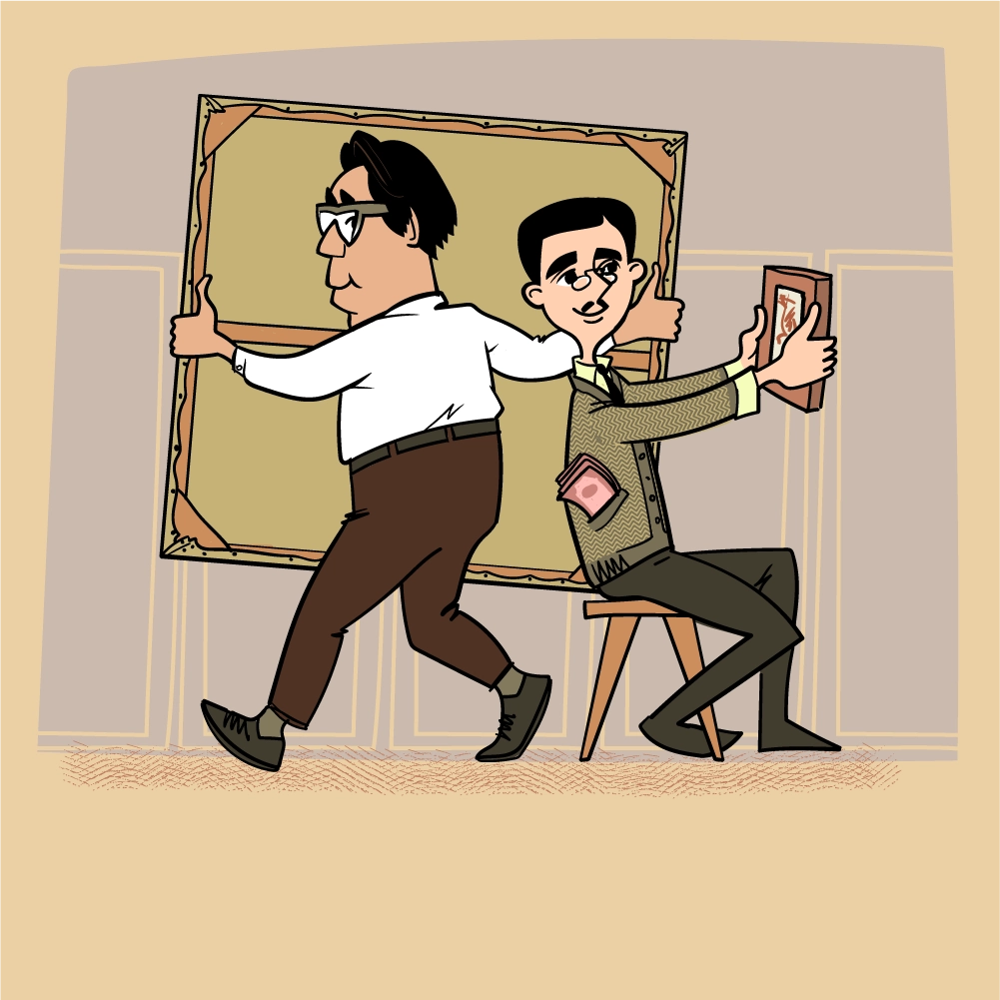
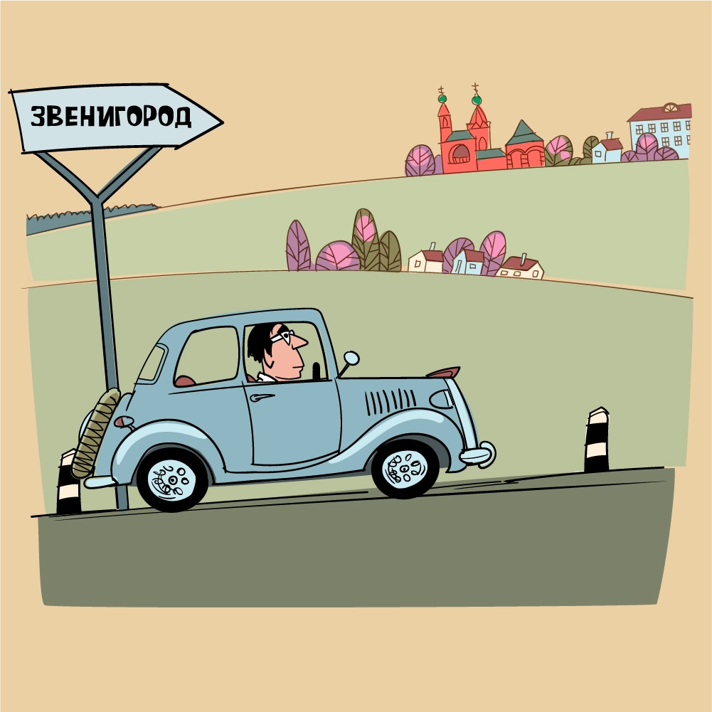
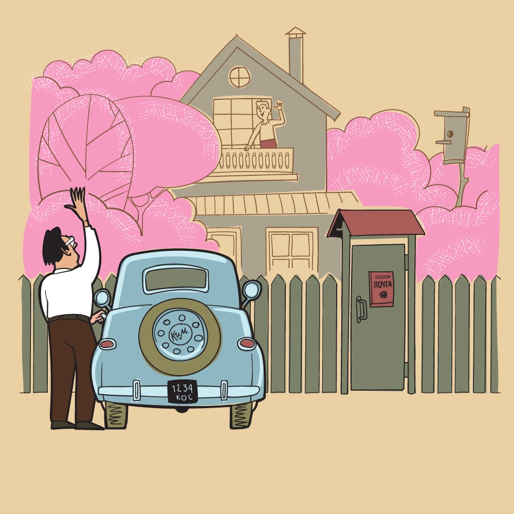
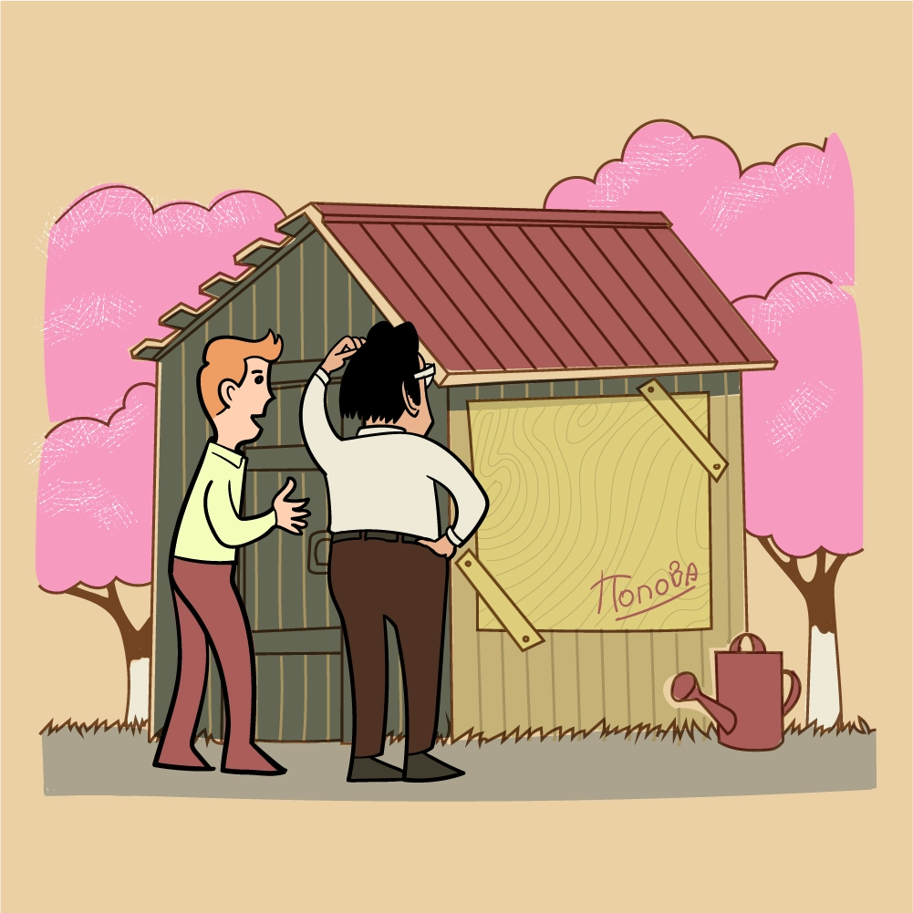

George Costakis tells:
At first I managed to get two paintings by Lyubov Popova, then the thread broke, and it was only by chance that I got back on the right track.

Popova died in the 24th year, after which I met her brother Pavel
Sergeyevich Popov, a university professor, a very handsome, tall gentleman. He lived on the Arbat, in one of the alleys, in a large apartment. In the room where he received me, I saw two small paintings by Popova.

I said that I had heard a lot about his sister. He says, "Yes, you know, she died early, but I still have some of her works." I said that I was collecting her works and would like to buy it from him. And he replied: "Why not? I'll show you." He led me into another room, where 10-15 canvases were stacked. All first-class! And I bought them from him.
Pavel Sergeevich parted with small canvases with great difficulty. When I told him that I would like to buy them too, he did not agree: "No, I will leave this one, because it is small, you can always hang it, but the big ones... What shall I do with them?"
Pavel Sergeyevich had an adopted son who lived in Zvenigorod. One day Pavel Sergeyevich offered to go to him, suggesting that his sister's paintings should also remain in Zvenigorod. I went there...
Country house, large garden. It was just the time of flowering — pink and white apple trees, cherries. I was received very well.

And the first thing I saw when I climbed the stairs to the second floor was Popova’s painting - there was a trough hanging on it...
Then we walked around the garden. And I saw the window of the barn, clogged with plywood. The signature could be read on the plywood: "Popova".

I went into the barn and saw that on the back of the plywood there was a beautiful work by the artist. I immediately offered to sell it to me, but the owner of the house replied: "No, I can't, if it rains, everything in the barn will get wet. First, bring me the plywood, and then I'll give you the painting."
I had to go to Moscow to look for plywood. I didn't find the right piece, so I bought two smaller ones and brought them to Zvenigorod.
Help Costakis get a painting by Lyubov Popova into his collection!
In exchange, the owner gave me a beautiful painting. He also sold the rest of the paintings to me very cheaply.

Thus, I acquired most of Popova's works from the family of the late artist.